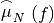

MorphologicalMultiScaleDecomposition¶
Perform a geodesic morphology based image analysis on an input image channel
Description¶
This application recursively apply geodesic decomposition.
This algorithm is derived from the following publication:
Martino Pesaresi and Jon Alti Benediktsson, Member, IEEE: A new approach for the morphological segmentation of high resolution satellite imagery. IEEE Transactions on geoscience and remote sensing, vol. 39, NO. 2, February 2001, p. 309-320.
It provides a geodesic decomposition of the input image, with the following scheme. Let denote the input image, denote the convex membership function,  denote the concave membership function and  denote the leveling function, for a given radius
denote the leveling function, for a given radius  as defined in the documentation
of the GeodesicMorphologyDecompositionImageFilter. Let denote a range of increasing radius (or scales). The iterative decomposition is defined as follows:
as defined in the documentation
of the GeodesicMorphologyDecompositionImageFilter. Let denote a range of increasing radius (or scales). The iterative decomposition is defined as follows:
=
=
=
The  and
and  are membership function for the convex
(resp. concave) objects whose size is comprised between and
are membership function for the convex
(resp. concave) objects whose size is comprised between and
Output convex, concave and leveling images with B bands, where n is the number of levels.
Parameters¶
Input Image -in image Mandatory
The input image to be classified.
Output Convex Image -outconvex image [dtype] Mandatory
The output convex image with N bands
Output Concave Image -outconcave image [dtype] Mandatory
The output concave concave with N bands
Output Image -outleveling image [dtype] Mandatory
The output leveling image with N bands
Selected Channel -channel int Default value: 1
The selected channel index for input image
Structuring Element Type -structype [ball|cross] Default value: ball
Choice of the structuring element type
- Ball
- Cross
Initial radius -radius int Default value: 5
Initial radius of the structuring element (in pixels)
Radius step -step int Default value: 1
Radius step along the profile (in pixels)
Number of levels use for multi scale -levels int Default value: 1
Number of levels use for multi scale
Available RAM (MB) -ram int Default value: 256
Available memory for processing (in MB).
Load parameters from XML -inxml filename.xml
Load application parameters from an XML file.
Save parameters to XML -outxml filename.xml
Save application parameters to an XML file.
Examples¶
From the command-line:
otbcli_MorphologicalMultiScaleDecomposition -in ROI_IKO_PAN_LesHalles.tif -structype ball -channel 1 -radius 2 -levels 2 -step 3 -outconvex convex.tif -outconcave concave.tif -outleveling leveling.tif
From Python:
import otbApplication
app = otbApplication.Registry.CreateApplication("MorphologicalMultiScaleDecomposition")
app.SetParameterString("in", "ROI_IKO_PAN_LesHalles.tif")
app.SetParameterString("structype","ball")
app.SetParameterInt("channel", 1)
app.SetParameterInt("radius", 2)
app.SetParameterInt("levels", 2)
app.SetParameterInt("step", 3)
app.SetParameterString("outconvex", "convex.tif")
app.SetParameterString("outconcave", "concave.tif")
app.SetParameterString("outleveling", "leveling.tif")
app.ExecuteAndWriteOutput()
Limitations¶
Generation of the multi scale decomposition is not streamable, pay attention to this fact when setting the number of iterating levels.